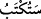

Onların bu şâhidlikleri, bu şehâdetleri amel defterlerinde yazılacak, yazıcı melek
onların melekler adına yapmış oldukları bu şehâdeti yazacak ve kıyâmette bu şehâdetten
sorguya çekileceklerdir. Bu ifâde bir tehdiddir.
Müftî Sa’dî şöyle demiştir. “__WORD__/setüktebu” kelimesindeki “sîn” harfi tekîd içindir.
Söyledikleri bu söz yazılmadan önce onlara tanınan bir tevbe mühletini ifâde ediyor da
olabilir. Gerçi onların bu durum hakkında herhangi bir bilgileri yoktur. Hadis-i şerifte
şöyle buyrulmaktadır: “İyilikleri yazan melek kişinin sağında, kötülükleri yazan melek
ise solundadır. İyilikleri yazan melek aynı zamanda kötülükleri yazan meleğin
âmiridir. Sonuçta kişi bir iyilik yaparsa sağdaki melek bunu on iyilik yazar. Kişi bir
kötülük yaparsa bu sefer sağdaki melek soldaki meleğe bırak yazma, yedi saat bekle.
Bu arada belki Allah’ı tesbih eder yahut tevbe ederek Allah’tan mağfiret taleb eder”
der.[152]
İbn Cüreyc şöyle demiştir: Bu melekler, birisi kişinin sağında diğeri kişinin solunda
bulunan iki melektir. Sağdaki melek sol tarafta bulunan arkadaşının şehâdet ve onayını
almaksızın iyilikleri yazar. Soldaki melek ise sağdaki meleğin şehâdet ve onayını
almadan bir şey yazamaz. Kişi oturduğu zaman bunlardan biri kişinin sağında diğeri de
solunda bulunur. Yürüdüğü zaman ise bunlardan biri kişinin önünde diğeri de arkasında
bulunur. Kişi uyuduğu zaman meleklerden biri baş, diğeri ise ayak ucunda bulunur.
Kâfirler için de aynen müminler gibi yazıcı ve koruyucu melekler vardır. Şâyet,
“Kâfirlerin iyilik ve sevâbı olmadığına göre, sağdaki melek ne yazacak?” denilirse buna
şöyle cevap verilir: Evet soldaki melek, diğer arkadaşının izin ve onayı ile yazar.
Sağdaki ise kendisi bir şey yazmadan buna şâhid olur.
Bazı muhaddisler şöyle demiştir: Melekler insanlardan tuvalette ve cinsî münâsebet
durumunda ayrılırlar.
Tarîkat-i Muhammediye’nin şerhinde şöyle denilmiştir: Helâda konuşmak mekruhtur.
İhtiyacını görme ânında bu kerahet daha da şiddetli ve ağır olur. Çünkü koruyucu ve
yazıcı melekler, bu sözleri yazmak için o kerih mekanda bulunmaktan rahatsız olurlar.
Öyle ise kişi edepli olmalı, murâkabe hâlinde bulunmalı, şer ve kötülükten uzak durup
hayra koşmalıdır.
Hadis-i şerifte şöyle buyrulmuştur: “Hayır ve şer hazineleri Allah katındadır.
Bunların anahtarları kişilerin kendileridir. Allah’ın, kendilerini hayra anahtar şerre
kilit yaptığı kimselere ne mutlu! Allah’ın kendilerini şerre anahtar ve hayra kilit
yaptığı kimselere de yazıklar olsun!”[153]
Âyet-i kerimede şuna da işâret edilmektedir: Allah Teâlâ kullarına mühlet veriyor,
dünyada onları hemen ansızın yakalamıyor. Böylece kul, Yüce Allah’a göre af ve
ihsânın, yakalayıp intikam almaktan daha sevimli olduğunu görmüş olsun. Yine bu
mühlet içinde kullar, inkâr ve isyanlardan tevbe etme imkânı bulurlar.
Şâir der ki:
Gelin gönülden el kaldırıp duâ edelim,